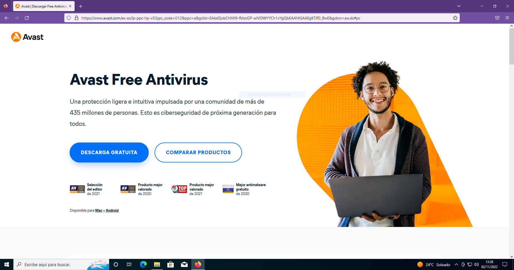
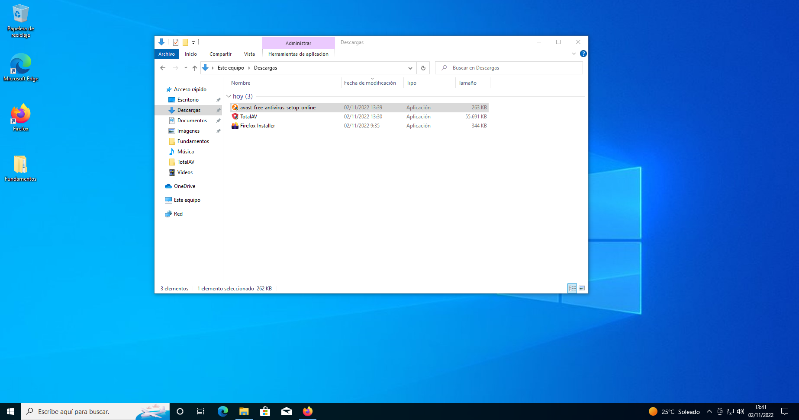
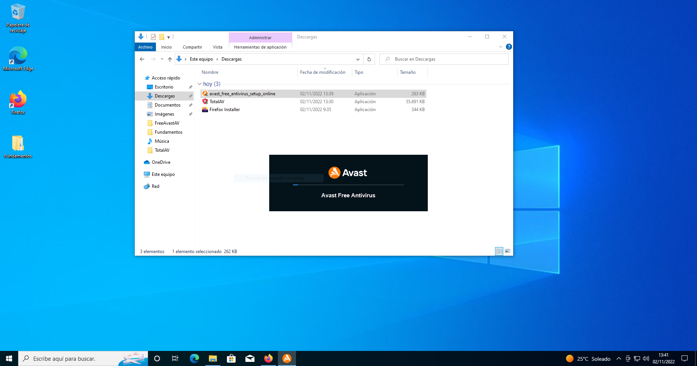
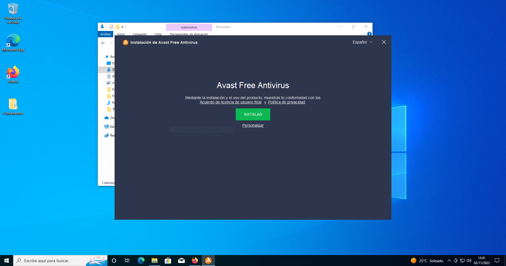
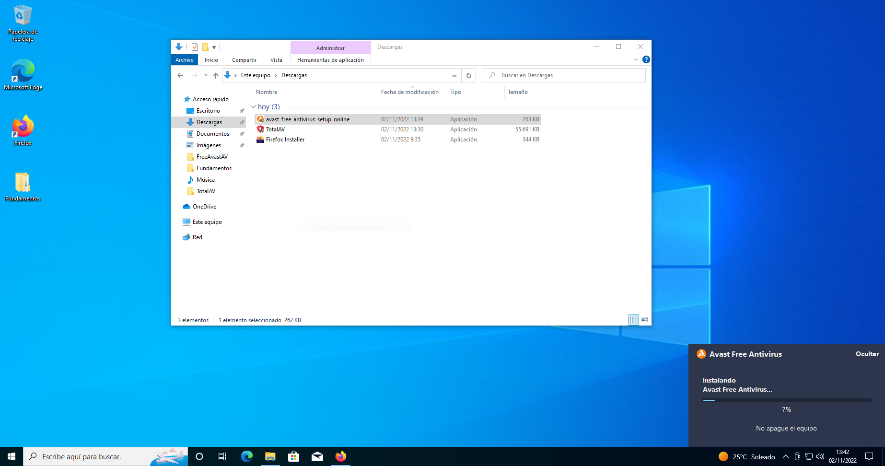
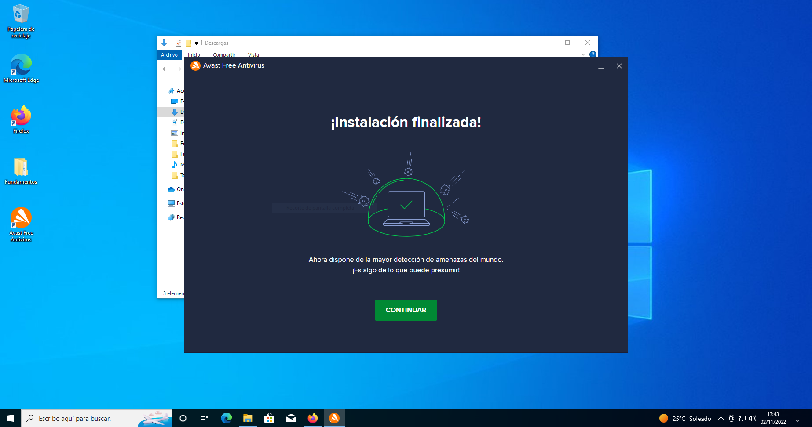
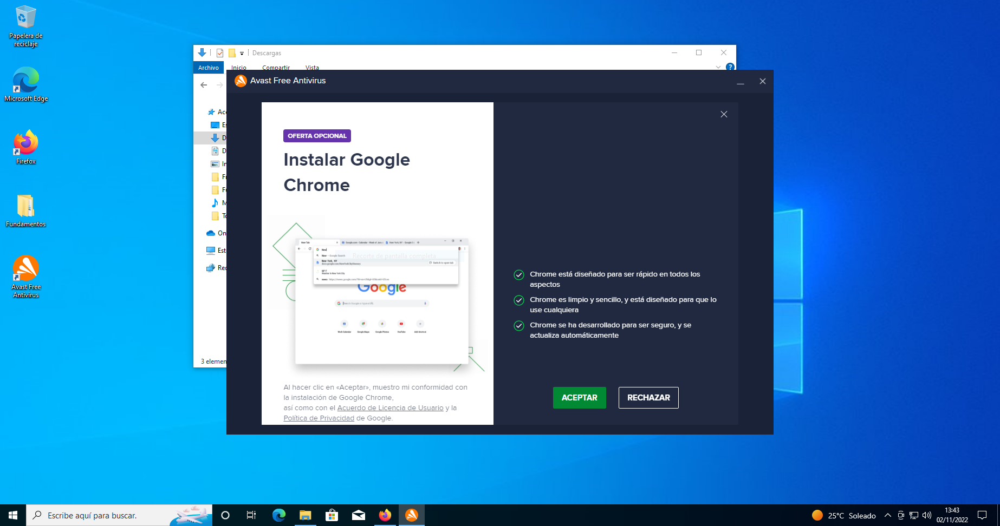

En esta página se va a presentar como se hace la instalación del AntiVirus "Free Avast Antivirus" en Windows y sus diferentes pasos
Clickamos en el primer enlace que nos aparece. Con él accederemos a la pagina que se presenta en la siguiente foto.
Al abrir esta pagina pulsamos sobre el botón azul que dice "DESCARGA GRATUITA". Tener en cuenta que esta descarga es para Windows
Comenzará la descarga del instalador, cuando esté instalado tendremos que ir a donde se haya descargado
Hacemos doble click sobre sobre el icono de Free Avast AntiVirus como se ve en la foto y así entraremos en el instalador
Cuando hayamos clickado se habrá abierto esta pestaña y habrá comenzado la instalación de dicho programa
Habrá comenzado la instalación como se ve en la foto cuando esta se haya completado seguiremos con la instalación
Para seguir con dicha instalación del programa necesitamos clickar donde dice "Instalar"
Si se ha instalado correctamente se debería abrir esta pequeña pestañita en el lateral de la pantalla. De igual forma que se presenta en la foto
Cuando ya se haya instalado todo correctamente clickamos en el botón de "CONTINUAR"
Este es el último paso de la instalación
Ahora clickamos "ACEPTAR". La instalación se ha hecho bien y el AntiVirus estaría bien instalado en nuestro ordenador y funcionando correctamente
Instalación terminada y con éxito si se han seguido los pasos citados